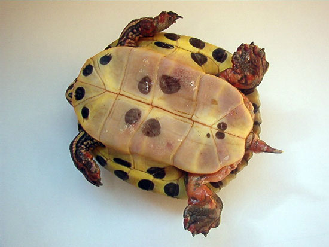
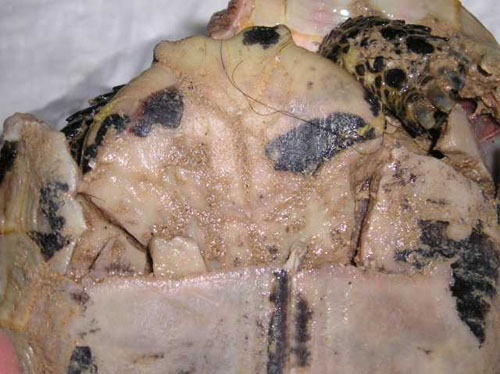

|
EL CAPARAZÓN DE LAS
TORTUGAS. PROBLEMAS Y CUIDADOS
Ginés Rubio Calín, 2006
Hospital Veterinario de
Pequeños Animales San Antón.
Guardamar del Segura
Alicante
INTRODUCCIÓN
El caparazón de las tortugas es una de las mejores defensas externas
con la que la naturaleza ha dotado a un animal. Supone a su vez una
estructura anatómica de gran éxito evolutivo, pues ha permanecido casi
inalterable desde la aparición de estos animales, hace más de 200
millones de años (Avanzi, M. 2004). Sus peculiares características
fisiológicas han permitido a estos animales vivir en todos los tipos
de ecosistemas del planeta; océanos, ríos, desiertos, montañas y
selvas. Ante esta diversidad de hábitats también ha adoptado
diferentes formas permitiendo una mejor adaptación al medio;
caparazones articulados que pueden cerrar una parte (Kinixys spp),
cerrarse completamente (Tortugas de caja). Caparazones planos que
permiten a la tortuga esconderse en estrechas oquedades de las rocas (Malacorchesus
tornieri). Coloraciones más claras u oscuras dependiendo de la altitud
en la que vivan para conseguir una mayor eficacia en la captación de
rayos solares. También la forma y estructuras de las capas córneas
refleja diferencias sexuales entre individuos (espolones, abertura de
las placas anales, faldones más o menos pronunciados, etc.). La mayoría
de las tortugas terrestres tienen un espaldar abombado, lo que les
confiere mayor protección ante la mandíbula de los depredadores. La
forma aplanada de las tortugas acuáticas les permite un mejor
desplazamiento en al agua y corrientes de los ríos (Coborn, John,
1998). Aquellas tortugas que presentan unos pocos escudos, no pueden
retraer completamente el cuerpo en su interior, pero parecen haber
compensado esta aparente fragilidad con un comportamiento más
agresivo; Apalone spp., Macroclemys, Chelydra (Ackerman, L. y col.
1998). En otras especies el caparazón ha sustituido su estrato córneo
por una capa de piel como el cuero (Apalone spp.)
Sin embargo, la vida en cautividad pone a prueba en multitud de
ocasiones la resistencia de esta formidable armadura, al someterla a
condiciones y situaciones bastante peligrosas para su integridad.
DESCRIPCIÓN ANATÓMICA
El caparazón de los quelonios consta de una parte superior, también
llamada espaldar, y una inferior o plastrón. Estas dos estructuras
surgen de la fusión de las costillas con las vértebras de la columna
(Foto 1), las cinturas pélvica y escapular, y con los osteodermos,
estructuras osificadas derivada de la piel (Boyer, H.T. y col. 1996;
Avanzi, M. 2004). El espaldar se forma por la sutura de 50-60 placas
óseas y el plastrón de 11.
Por encima de éstas se disponen otras placas de naturaleza córnea
(queratina), que son la parte visible del caparazón. Las placas óseas
no se corresponden en su posición con las placas córneas de la
superficie, y esta disposición es la que le confiere la típica rigidez
y solidez a esta estructura (Foto 2). La nomenclatura de las placas es
fácil de recordar pues se corresponde con la zona corporal que
recubren (Foto 4-5).
El caparazón es un tejido vivo que contiene receptores de presión,
frío, calor (Young, B. 1998) y como tal, cualquier procedimiento que
se realice sobre él será percibido y sentido por la tortuga.
|
Foto 1.
En la imagen se aprecia el resultado de
la fusión entre la columna vertebral y lo que serían las costillas
en un mamífero. |
Foto 2.
La primera capa (Flecha amarilla), corresponde con las placas
córneas y la subyacente (Flecha roja) con las óseas |
Foto 3.
Obsérvese la capa ósea subyacente al desprenderse las placas córneas.
Aída Rodríguez.

Foto 4. Nomenclatura de las
placas del caparazón.

Foto 5. El nombre de las
placas del plastrón se corresponde con la zona que cubren; gular
(cuello), humeral, pectoral, abdominal, femoral y anal.
PATOLOGÍA DEL CAPARAZÓN
Podemos agrupar los
diferentes procesos que afectan al caparazón en dos grupos; aquellos
que tienen su origen en un mantenimiento inadecuado y que podríamos
denominar causas higiénico-ambientales y los debidos a procesos
traumáticos.
I-
CAUSAS HIGIÉNICO- AMBIENTALES
a) Pérdida
de placas córneas.
En tortugas acuáticas es un proceso muy frecuente y fisiológico.
Responde a una muda o cambio de placas por el crecimiento constante de
estos animales. Las podemos ver flotando, como estructuras
transparentes, en el agua del acuario o por la superficie en la que
viva la tortuga (Foto 6). El cambio es paulatino y gradual. Cuando la
pérdida es generalizada y constante hay que evaluar las condiciones
ambientales y nutricionales para localizar la causa principal:
·
Exceso de humedad:
Más en tortugas de tierra que se mantienen sobre substratos demasiado
húmedos, principalmente tras la hibernación (Foto 7).
·
Falta de radiación solar.
Si los animales no tienen acceso al exterior no reciben la radiación
ultravioleta B, imprescindible para el desarrollo óseo. Las placas se
debilitan y reblandecen por falta de calcio.
·
Tipo de Agua.
La dureza, el contenido en minerales y el pH del agua, son factores
que influyen en el aspecto externo del caparazón. Si el agua tiene un
alto contenido en minerales se puede producir un depósito de éstos
sobre las placas o entre las líneas de unión de éstas. Algunas
tortugas de caparazón blando, Apalone spp. , pueden verse perjudicadas
si el pH del agua no es el adecuado al favorecer la proliferación de
bacterias en el caso de heridas.
·
Golpes y caídas;
un fuerte traumatismo en una zona determinada puede provocar la
interrupción del riego sanguíneo a ese lugar, originando la pérdida y
el debilitamiento de las placas. Este proceso también se ha visto en
el caso de que las tortugas permanezcan durante mucho tiempo bajo un
foco de luz muy intenso y próximo (Mc Arthur, S. y col. 2004).
·
Peleas;
Los machos de diferentes especies cortejan a las hembras golpeándolas
con su propio peto. Un exceso de libido junto con la imposibilidad de
la hembra de retirarse o encontrar refugio para escapar (en
situaciones de cautividad), puede desembocar en la rotura de las
placas golpeadas (Foto 8).
Foto 6. Pérdida de placas
fisiológica.
Foto 7. Tras la hibernación en
lugares muy húmedos podemos observar pérdida de placas córneas.
Foto 8. Rotura de placas
costales por los golpes durante el cortejo.
b) Incendios y
Quemaduras. Los incendios forestales son una de las principales
causas de mortalidad de las tortugas de tierra de nuestro país, en su
hábitat natural (Merchán, M. y col. 1999). Los animales que sobreviven
sufren severos daños en el espaldar pues tienden a enterrarse para
protegerse del fuego, mientras que el plastrón queda resguardado.
También las tortugas que se mantienen en terrarios con fuentes de
calor inadecuadas (esterillas, piedras calefactoras o cables
eléctricos), y sin gradiente de temperatura dónde poder elegir el
lugar que permita alcanzar la temperatura corporal óptima (TCO),
pueden sufrir grandes quemaduras.
c) Parásitos
externos. Aunque no suelen ser muy frecuentes en quelonios, los
ácaros pueden invadir pequeñas erosiones en el caparazón y llegar a
invadir no sólo las placas superficiales, sino hasta el estrato
subepidérmico y óseo (Brotons, N. y col. 2002).
d) Hongos y
bacterias. En tortugas acuáticas que se mantienen en el interior
sin una fuente adecuada de radiación ultravioleta, sin acceso al sol
directo y sin una superficie seca dónde poder subirse, es muy común
observar un crecimiento aterciopelado, de aspecto blanquecino o
grisáceo sobre el espaldar. También es frecuente observar
incrustaciones entre las placas, de coloración verdosa que se
corresponde con la proliferación de algas en el acuario. Cuando estos
microorganismos actúan de forma más virulenta sobre las placas
córneas, originan un proceso conocido como Enfermedad Ulcerativa del
Caparazón (Foto 9). Se producen unas lesiones de tipo ulceroso,
llegando a tomar el aspecto de pequeños cráteres de diferente
profundidad. Si las lesiones avanzan, la infección puede pasar a la
sangre y órganos internos desencadenando un proceso septicémico que
terminará con la muerte del animal (Villaverde, S. y col. 2000;
Brunetti, L. y col.
1999; Boyer, T. H. 1996a).
Este proceso ocurre tanto en
animales cautivos como en la naturaleza
(Clayton, L. y col. 2003). Los agentes implicados pueden encontrarse
de forma habitual en la tortuga, pero no es hasta que se rompe el
equilibrio de su sistema inmunitario que se ve afectado el animal
(Martínez Silvestre, A. 2003).

Foto 9. Enfermedad ulcerativa
del caparazón (Aída Rodriguez).
Otro proceso provocado por hongos y
bacterias es la Dermatitis bacteriana o Dermatopatía Septicémica
(Martínez Silvestre, A. 2003). A diferencia de la anterior, sólo se ha
determinado enanimales en cautividad y es producida por la bacteria
Citrobacter Freundii, muy frecuente en el aparato digestivo de los
quelonios. Por este motivo es considerada como una entidad
patológica diferente a la anterior (Villaverde, J. y col. 2000). Este
proceso también afecta a la piel, extremidades y causa pérdida de
escamas y lesiones ulcerosas en el caparazón (Foto 10).

Foto 10. Dermatopatía
septicémica. Las lesiones pueden empezar por la piel y extenderse al
resto del cuerpo.

Foto 11. Lesiones en las
extremidades y en el plastrón (Jonathan González).
e)
Causas Nutricionales.
Existen diferentes patologías que producen deformaciones en el
caparazón y cuyo
origen está en un déficit nutricional o metabólico. La
Osteodistrofia Nutricional, también conocida como Enfermedad Ósea
Metabólica, es la principal causa de reblandecimiento del caparazón en
tortugas a partir de los 6-12 meses de edad. Este trastorno se debe a
una serie de factores que actúan de forma conjunta por lo que no
siempre será la misma causa en todos los animales; alimentación
deficitaria en calcio, consumo excesivo de proteínas o alimentos ricos
en fósforo, déficit de vitamina D3, ausencia de radiación ultravioleta
B (Mader, D. R. 2000; Boyer, T.H. 1996b). Cualquier factor que
intervenga en el metabolismo del calcio (bien en su síntesis,
asimilación y/o absorción) podrá desencadenar este proceso (Tabla 1).
|
OTRAS CAUSAS DE
ALTERACIÓN EN EL CAPARAZÓN
Dietas con ratio Ca/P
inadecuado
Alimentos ricos en
ácido Oxálico
Falta de radiación
ultra violeta B
Temperatura inadecuada
Fallo renal
Alteración de la
glándula Tiroides.
Parásitos intestinales
Problemas intestinales
Neoplasias
Hipovitaminosis B,E,A
Déficit de Selenio
Malformaciones
genéticas
Falta de enzimas que
metabolizan el Calcio
Problemas durante el
desarrollo embrionario
|
Tabla
1.
Piramidismo.
Este término hace referencia a la forma de “pirámide” que adoptan las
placas del espaldar como consecuencia de un crecimiento rápido y
anómalo del tejido córneo. La capa externa de queratina crece a mayor
velocidad que la placa ósea subyacente por lo que las placas nuevas se
van acumulando y creciendo sobre la misma base, expandiéndose en
dirección vertical. El piramidismo suele ser una manifestación más de
la Osteodistrofia, aunque a veces se presenta sin la presencia de este
proceso (Mc Arthur, S. y col. 2004). Hasta la fecha se consideraba el
consumo excesivo de grasas y alimentos ricos en proteínas como uno de
los principales factores que provocaba el crecimiento acelerado de las
placas
y por tanto desencadenante del
Piramidismo (Highfield, A.C. 1996). También se ha constatado que las
tortugas del género Testudo a las que no se les permite hibernar
durante los períodos de invierno, crecen más rápido que sus congéneres
en libertad pudiendo sufrir esta deformación con mayor frecuencia.
Sin embargo, experimentos realizados con tortugas de crecimiento
rápido (G. Sulcata), alimentadas con dietas ricas en proteínas pero en
ambientes con diferente grado de humedad, han permitido considerar la
falta de éste factor, como la principal causa del Piramidismo (Wiesner,
C. S. y col. 2003). La falta de humedad ambiental parece que provoca
un colapso del tejido cartilaginoso en crecimiento con el consiguiente
acúmulo de placas sobre esas zonas, independientemente de la dieta
recibida.
Foto 12. Osteodistrofia
nutricional.
Foto 13. Deformación del
caparazón (Jonathan González).
Foto 14. Piramidismo como
consecuencia de Osteodistrofia.

Foto 15. Duplicidad de placas.
La principal causa suele ser el cambio brusco de temperaturas durante
el primer tercio de la incubación (Ascensión Muñoz).

Foto 16. Caparazón “de goma”,
típico de la Osteodistrofía nutricional por falta del calcio.
Otras causas
Los alimentos ricos en ácido oxálico
interfieren en la asimilación del calcio al unirse con éste y formar
oxalatos, que son compuestos insolubles y no asimilables por el
organismo. Las enfermedades renales también pueden desencadenar y
contribuir a la falta de asimilación del calcio; el último paso para
la activación de la provitamina D a 1,25-dihidrocolecalciferol, forma
activa, ocurre en el riñón. La temperatura y la radiación
ultravioleta también son factores fundamentales durante este proceso
de transformación. Los parásitos intestinales, las neoplasias y
cualquier otro factor que impida la correcta asimilación del calcio o
altere el balance metabólico con el fósforo, tendrá consecuencias
visibles sobre la estructura del caparazón de los quelonios.
II. TRAUMATISMOS
DEL CAPARAZÓN
La rotura
traumática del espaldar o del plastrón es un hecho bastante habitual
en todas las especies de quelonios. Las causas más frecuentes suelen
ser:
• Actos vandálicos
o negligentes. Algunas personas realizan agujeros en el caparazón para
encadenar o sujetar a los animales y así evitar su huida ( Foto 17).
• Caída de pisos
• Mordeduras de
animales; perros, gatos, roedores (Foto 18-20).
• Accidentes de
tráfico
• Cortadoras de
césped.
• Golpes con aperos
de labranza u otra maquinaria (suelen ocurrir en pequeñas huertas
dónde se mantienen tortugas, al estar escondidas bajo tierra o durante
la época de hibernación)
Foto 17. Agujeros practicados
de forma intencionada para colocar una cadena (Tomás Bustamante).

Foto 18. Mordedura de perro
con grave pérdida de placas, alcanzando cavidad celómica.

Foto 19. Evisceración tras
morderdura.

Foto 20. Rotura y
desplazamiento del plastrón.
TRATAMIENTO Y
DIAGNÓSTICO DE LOS PROBLEMAS HIGIÉNICO AMBIENTALES
La resolución de
los problemas relacionados con la pérdida de placas, reblandecimiento
y contaminación, pasa en primer lugar por la revisión completa de
todos los parámetros de mantenimiento, medio ambientales y
nutricionales de la tortuga. Como hemos visto, salvo las alteraciones
traumáticas, el resto de anomalías o procesos patológicos tiene una
causa subyacente externa que debemos corregir. Al igual que con el
resto de animales, es necesario realizar un examen completo que
incluya un chequeo coprológico y una analítica sanguínea que nos
determine el estado de salud (recuento de serie blanca, eritrocitos,
hematocrito, proteínas totales, ratio calcio/fósforo, ácido úrico y
electrolitos).
Los factores que
deben examinarse en una completa anamnesis son:
• Temperatura
Corporal Óptima.
• Sistemas de
calefacción y medición del gradiente térmico establecido
• Humedad ambiental
y disponibilidad de agua
• Tipo de substrato.
• Fotoperíodo o cantidad y duración de la
luz proporcionada. Tipo de luz
• Aireación del
terrario
• Dieta. Es
fundamental saber si la dieta es adecuada a la especie (tortugas
herbívoras, omnívoras), así como su calidad nutritiva (relación
calcio/fósforo) y si reciben suplementos vitamínicos
• Tipo de
desinfección de los terrarios. Filtraje de los acuarios. Calidad del
agua.
• Desparasitación
• Proporción de
individuos que viven juntos
• Estado
reproductivo.
Una vez establecido
el diagnóstico, el tratamiento irá encaminado a corregir los errores
de mantenimiento detectados. En ocasiones es suficiente con
proporcionar luz solar directa, lugares de reposo secos, dieta
adecuada, humedad, ventilación, etc., para solucionar el problema.
Tras rectificar estos parámetros la limpieza de las placas puede
realizarse con un cepillo y agua. En el caso de heridas es
recomendable el uso de povidona iodada o clorhexidina. El uso de
productos oleosos para abrillantar el espaldar está desaconsejado
puesto que impide la correcta transpiración del estrato córneo (Pursall,
B. 2002).
Los casos de
Enfermedad Ulcerativa o Dermatopatía Septicémica necesitan un
tratamiento médico inmediato de tipo local y sistémico. Las heridas
deben desbridarse en profundidad hasta alcanzar tejido sano, para
posteriormente desinfectarse con clorhexidina o povidona iodada. El
uso de pastas dentales para recubrir los defectos más grandes, ha dado
buen resultado acelerando el proceso de cicatrización y el
mantenimiento de la asepsis de la herida (Muro, J. 1998). El empleo de
antibióticos sistémicos debería hacerse tras realizar el pertinente
cultivo y antibiograma.
TRATAMIENTO DE LOS
PROCESOS TRAUMÁTICOS
Si somos requeridos
para tratar una fractura de caparazón, la primera medida que debemos
recomendar antes de traer la tortuga a la clínica, es la limpieza con
abundante agua para eliminar todos los restos de suciedad y el
recubrimiento de la zona con un vendaje simple que impida el
desplazamiento de los fragmentos (Foto 22). La principal urgencia no
es la rotura del caparazón en sí, sino el posible daño interno.
Dependiendo del origen de la fractura lo primero será evaluar y
estabilizar los daños en los tejidos blandos, controlar las
hemorragias y el daño pulmonar (Bachs Taberner, M. 1996).
Posteriormente será necesario realizar pruebas analíticas y
radiografías para establecer un pronóstico aproximado de las
lesiones. En Quelonios resulta de mucha utilidad el examen mediante
endoscopio de la cavidad celómica (Ackermann, L. 1998). Un sangrado
constante nos hará sospechar de rotura visceral o daños en las venas
abdominales que cruzan longitudinalmente el plastrón (Martínez
Silvestre, A. 1994). Las roturas en el espaldar que comunican la
cavidad pulmonar con el exterior, no producen colapso de los pulmones,
como ocurre en los mamíferos, al no existir presión negativa. Por
tanto, la respiración no se verá comprometida pero las infecciones
subyacentes pueden ser muy graves. El daño directo en la columna
vertebral puede comprometer seriamente las funciones motoras y
neurológicas.
Para conseguir una
estabilización de las constantes vitales y una respuesta al
tratamiento es fundamental alcanzar la temperatura corporal óptima e
hidratar con suero a temperatura adecuada. Ante la imposibilidad la
mayoría de las veces de establecer una vía venosa, debemos recurrir a
la vía intracelómica, intraósea o en la fosa pectoral. Se recomienda
utilizar una mezcla de solución de Ringer con suero fisiológico (Carpenter,
J. W. y col. 1996). Hasta que no consigamos estabilizar las constantes
no empezaremos la terapia antibiótica, pues con el metabolismo
reducido por la pérdida de calor y líquidos corporales, la tortuga no
será capaz de metabolizar el antibiótico ni de eliminarlo
adecuadamente, comprometiendo seriamente la función renal.
Pasadas más de 4-6
horas tras el accidente, la herida se considera infectada y lo
primordial será controlar la infección (Barten, S.L. 1996) antes que
la reparación. Si la herida ha sido controlada inmediatamente y no
existe mayor daño, podremos esperar entre 24-48 horas para iniciar la
reparación de los fragmentos (Kishimori, J. y col. 2001), o bien
esperar el tiempo que estimemos adecuado para dar por controlada la
infección. Las heridas por mordedura de perro u otro animal producen
pérdida de sustancia y maceración de los tejidos. Este tipo de
traumatismo se considerará siempre como infectado y sólo se cerrará
tras la realización del tratamiento adecuado según cultivo bacteriano
y cuando consideremos que la infección ha remitido. Si el daño se ha
producido en los bordes de las placas, aún habiendo pérdida de
sustancia se recomienda el cierre por segunda intención (Foto 21).
Foto 21. Mordedura con pérdida
de sustancia pero sin afectación de órganos vitales. Obsérvese la
hemorragia por la gran vascularización de las placas óseas.
Este sistema
requiere la estrecha colaboración del propietario, pues es necesario
realizar lavados frecuentes con soluciones salinas y recubrimientos
con apósitos, al menos una vez al día durante varias semanas. Es muy
importante desbridar bien las zonas afectadas de tejido contaminado o
necrótico, para evitar el riesgo de Osteomielitis (McArthur, S. , y
col. 2004). El tratamiento médico de las heridas no difiere del
utilizado en el resto de animales, pudiendo utilizar soluciones de
clorhexidina o povidona iodada, además de diferentes cremas
antibióticas (Barten, S.L. 1996).
Las tortugas
acuáticas que precisan alimentarse en el agua, recibirán el mismo
tratamiento, pero deberán estar durante al menos dos o tres horas en
un lugar seco. En ocasiones es útil mantener a las tortugas en un
acuario de hospitalización donde añadiremos antisépticos de uso
habitual en acuarofilia (Ackerman, L. 1998).
Una vez
estabilizado el paciente y reducido el riesgo de infección,
procederemos al cierre y sellado de los fragmentos. Para conseguir
este objetivo disponemos de diferentes formas de reparación que
podríamos agrupar en: Sistemas de reparación Química y Sistemas de
reparación Mecánica.
I) Reparación
Química. Este procedimiento es el más convencional y usado por la
mayoría de los veterinarios. Consiste en la aplicación de diferentes
sustancias que al reaccionar entre sí quedan firmemente adheridas a la
superficie, sellando el defecto. La más efectiva por su firmeza,
capacidad de estabilización, impermeabilidad y resistencia es la
combinación de una resina epoxi con fibra de vidrio (Foto 23). La
aplicación de varias capas de estos dos productos consigue un cierre
rápido de la fractura y un aspecto bastante estético. Es el sistema de
elección para el cierre del plastrón tras la realización de una celiotomía. La superficie se prepara eliminando restos de grasa con un
poco de alcohol o cetona. Se realizan unos pequeños cortes en la
superficie de las placas, alrededor de la zona a cerrar, para permitir
una mejor adherencia de la fibra de vidrio. Ésta debe sobre pasar dos
o tres centímetros el borde de la pieza que se quiere cubrir. El
espacio que queda entre el borde del fragmento y el resto del
caparazón se tiene que rellenar con una crema antibiótica para impedir
el paso de la resina al interior de la herida. Si esto ocurriera,
además de la contaminación, retrasaría e impediría el cierre al quedar
interpuesto entre los bordes de los fragmentos (Frye, F. 1994). Además
de la fibra de vidrio se han utilizado multitud de productos para
sellar las fracturas de caparazón, desde masillas selladoras (Alegre,
F. y col. 1991), hasta cementos óseos y acrílicos dentales (Foto
24)
(Benett, R.A. 1997).
II) Reparación
Mecánica. Este sistema consiste en la utilización de elementos de
traumatología tradicional (placas, tornillos y cerclajes), para
conseguir un mismo objetivo; la estabilización y cicatrización de una
fractura (Foto 25). También se utilizan plásticos termomoldeables que
se adaptan a la forma del caparazón (Kishimori, J. y col. 2001) y
fijadores externos que evitan el contacto directo con la herida (Richards,
J. 2001). Una vez comprobada la cicatrización, estos materiales
pueden ser retirados y los orificios sellados con resinas o acrílicos
que permitan la revisión periódica hasta el cierre completo del
defecto.
Foto 22. Presentación de una
tortuga tras sufrir un traumatismo en el caparazón.

Foto 23. Sellado con fibra de
vidrio.

Foto 24. Acrílico dental.
Mediante una reacción química se endurece el material, adaptándose al
lugar que deseemos reparar.

Foto 25. Reparación del
plastrón con placas y tornillos ortopédicos.
Independientemente
del sistema utilizado, el objetivo de cualquier técnica reparadora es
el de recuperar y mantener el aspecto original, que aguante el tiempo
necesario, que resista la actividad normal de la tortuga (roces y
golpes) y que no impida su correcto desarrollo (en animales jóvenes
debemos controlar el sistema utilizado para que no perjudique el
crecimiento de las placas al hacer tensión sobre los fragmentos).
Normalmente la cicatrización de las placas córneas puede tardar una
media de uno a dos años (Frye, F. 1991), siempre en función de la
extensión de la lesión. El uso de la técnica adecuada a cada situación
puede acortar este período en muchos casos hasta los 6 meses (Kishimori,
J. y col. 2001).
Los procesos de
cicatrización en los quelonios, así como su respuesta inmunitaria
están condicionados por la temperatura externa, por tanto, no debemos
permitir la hibernación de aquellas especies que la realicen, con el
fin de evitar el retraso en la cicatrización. En estos casos es
primordial mantener a la tortuga en las condiciones de temperatura,
humedad e higiene idóneas a su especie. También debemos evitar
substratos muy abrasivos y la relación con otros individuos que
pudieran lastimarlos.
Prohibida la
reproducción total o parcial de este texto sin la autorización expresa
del autor.
BIBLIOGRAFIA
Ackerman, L.
1998. The Biology,
Husbandry and Health Care of Reptiles. Volumen III. Ed.
TFH, Publications.
Alegre, F. , Durán,
A. , López. C., Martínez, A. 1991. Celiotomía en una Tortuga Mora.
Clínica Veterinaria de Pequeños Animales. Vol. 11, nº 3: 49-56.
Avanzi, M. 2004.
Las Tortugas Terrestres. Editorial De vecci.
Barten, S.L.
1996. Shell Damage.
413-417. Mader, D.R. (Ed.) Reptile Medicine and Surgery. Saunders
Company. Philadelphia.
Basch Taberner,
M. 1996.
Alteraciones Traumáticas del Caparazón en Tortugas. Reptilia (E)
nº 8; 9-13.
Bennett, R.A.
1997. Principles of Reptile Surgery.
VI Jornadas Internacionales de
Cirugía Veterinaria. S.E.C.I.V.E. Barcelona.
195-204.
Boyer, T.H. 1996a.
Differential Diagnosis by Simptoms in Turtles, Tortoises and
Terrapins. 332-335. Mader, D.R. (Ed). Reptile Medicine and
Surgery. Saunders Company. Philadelphia.
Boyer, T.H. 1996b.
Metabolic Bone Disease. 385-392. Mader, D.R. (Ed). Reptile
Medicine and Surgery. Saunders Company. Philadelphia.
Boyer, H. T., Boyer,
Donal M. 1996. Biology of Turtles, Tortoises and Terrapins.
61-67. Mader, D.R. (Ed.). Reptile Medicine and Surgery. Saunders
Company. Philadelphia.
Brotons, N.J., Frye,
F. 2002. Preliminary Report of Subepidermical Mite Infestation in
a African Spurred Tortoise (G. Sulcata). Proceedings ARAV; 17.
Brunetti, L.
Millefanti, M. 1999. SCUD (Septicaemic Cutaneous Ulcerative
Disease) in Turtles and Tortoises. European Journal of Companion
Animal Practice.
Vol. IX, nº 1; 69-76.
Carpenter, J.
W., Mashima, T. Y., Rupiper, D. J. 1996.
Exotic Animal Formulary.
Greystone Publications.
Clayton, L.,
Myluiczenko, N., Greenwell, M. 2003. Review of Etiology and
Treatment Options for Non Traumantic Deep Shell Lesions in Freshwater
Turtles. Proceedings ARAV; 103-108.
Coborn, John, 1998.
Husbandry of Turtles, Tortoises and Terrapins. 403-438. En
Ackerman, L. The Biology, Husbandry and Health Care of Reptiles.
Volumen III. Ed. TFH, Publications.
Frye, F. 1991.
Biomedical and Surgical Aspects of Captive Reptile Husbandry.
Krieger Publishing Company. 2ª. Ed.
Frye, F. 1994.
Reptile Clinician´s Handbook. Krieger Publishing Company.
Highfield, A.C. 1996.
Practical Encyclopedia of Keeping and Breeding Tortoise and
Freshwater Turtles. Carapace Press. London.
Kishimori, J.,
Lewbart, G., Marcellin-Little, D., Roe, S., Trogdon, M., Henson, H.,
Stoskopf, M., 2001. Chelonian Shell Fracture Repair Techniques.
Exotic DVM. Veterinary Magazine. Vol. 3.5; 35-41.
Mader, D.R. 2000.
Reptilian Metabolic Disorders. 210-216. Fudge, A. M. Laboratory
Medicine. Avian and Exotic Pets. W.B. Saunders Company.
Martín Orti,
Rosario, Marín García, P., González Soriano, J. 2004. Atlas de
Anatomía de Animales Exóticos. Ed. Masson; 107-124.
Martínez Silvestre,
A. 1994. Manual Clínico de Reptiles. Grass-Iatros Ediciones.
Martínez Silvestre,
A. 2003. Enfermedades de los Reptiles. Reptilia Ediciones.
Merchán
Fornelino, M., Martínez Silvestre, A. 1999. Tortugas de España.
Ed. Antiqvaria, S.A.
Mc Arthur, S.,
Wilkinson, R., Meyer, J. 2004. Medicine and Surgery of Tortoises
and Turtles. Blackwell Publishing.
Muro, J. 1998.
Utilización de
una Pasta Oral en el Tratamiento de la Septicemia Cutánea Ulcerativa.
Clínica Veterinaria de Pequeños Animales. Vol. 18. Nº 1; 13-16.
Pursall, B. 2002.
Tortugas Terrestres Mediterráneas. Manuales del Terrario. Ed.
Hispano-Europea, S.A.
Richards,
Joanne. 2001. Metal Bridges- A new Technique of Turtles Shell
Repair. Journal of Herpetological Medicine and Surgery.
Vol. 11 (4); 31-34.
Villaverde,
S., Sanz, A., Ballesteros, C., De Vicente, M.J., Bengoa, A. 2000.
Enfermedad Ulcerativa Cutánea y Ulcerativa del Caparazón en Tortugas.
Consulta de Difusión de Pequeños Animales.
Vol. 8, nº 70; 81-89.
Wiesner, C.S., Iben,
C. 2003. Influence of Environmental Humidity and Dietary Protein on
Pyramidal Growth of Carapaces in African Spurred Tortoise (G. Sulcata).
Journal of Animal Physiology and Nutrition, nº 87; 66-74.
Young, Bruce A. 1998.
Hearing, Taste, Tactile Reception and Olfaction. 185-204. Ackerman,
L. The Biology, Husbandry and Health Care of Reptiles. Volumen I.
TFH Publications.
|